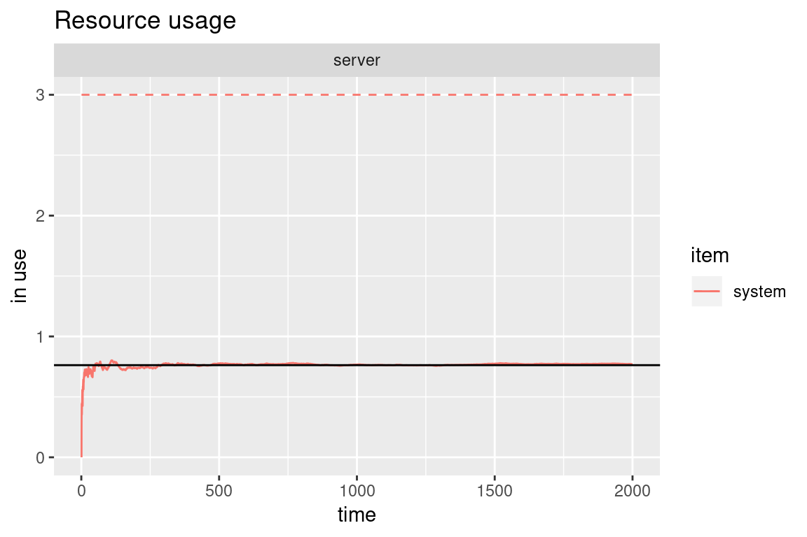
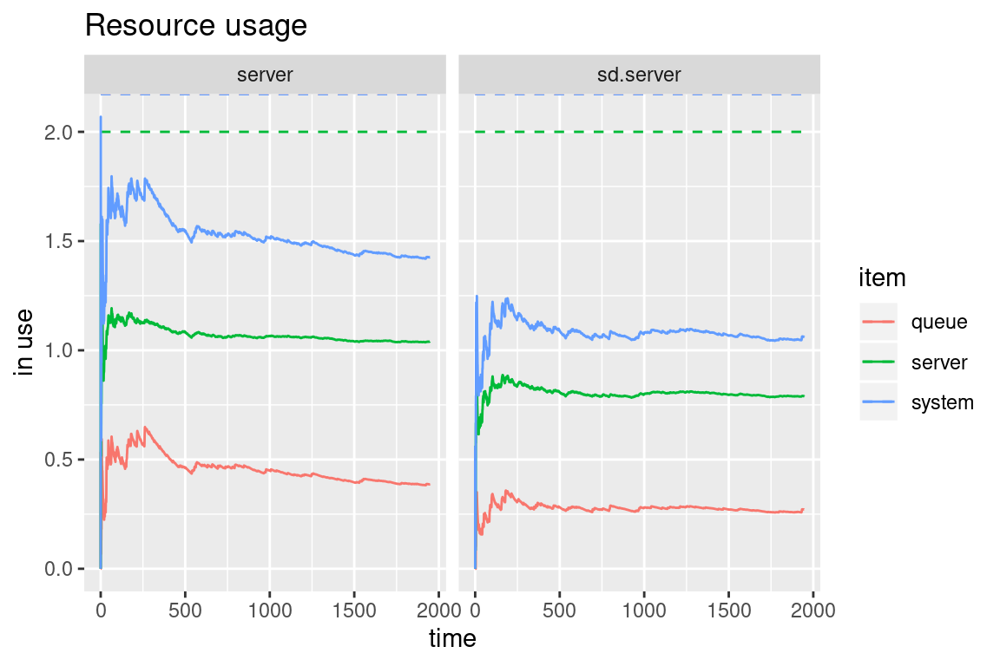

vignettes/simmer-06-queueing.Rmd
simmer-06-queueing.RmdIn Kendall’s notation, an M/M/c/k system has exponential arrivals (M/M/c/k), a \(c\) servers (M/M/c/k) with exponential service time (M/M/c/k) and an \(k-c\) positions in queue (M/M/c/k). For instance, a router may have several processors to handle packets, and the in/out queues are necessarily finite.
This is the simulation of an M/M/2/3 system (2 server, 1 position in queue). Note that the trajectory is identical to an M/M/1 system (one server, infinite queue).
lambda <- 3
mu <- 4
m.queue <- trajectory() %>%
seize("server", amount=1) %>%
timeout(function() rexp(1, mu)) %>%
release("server", amount=1)
mm23.env <- simmer() %>%
add_resource("server", capacity=2, queue_size=1) %>%
add_generator("arrival", m.queue, function() rexp(1, lambda)) %>%
run(until=2000)There are rejections when the queue is full.
By solving the balance equations for this system, we obtain the following:
\[ \begin{aligned} p_0 &= \left[ \sum_{n=0}^{c-1}\frac{r^n}{n!} + \sum_{n=c}^{k}\frac{r^n}{c!c^{n-c}} \right]^{-1}\\ N &= \sum_{n=0}^{\infty}nP_n = p_0\left(\sum_{n=0}^{c-n}\frac{nr^n}{n!} + \sum_{n=c}^{k}\frac{nr^n}{c!c^{n-c}}\right) \end{aligned} \]
where \(r=\lambda/\mu\). Finally, we can see how the simulation quickly converges to the theoretical average number of customers in the system \(N\):
# Theoretical value
rho <- lambda/mu
div <- 1 / c(1, 1, factorial(2) * 2^(2:3-2))
mm23.N <- sum(0:3 * rho^(0:3) * div) / sum(rho^(0:3) * div)
# Evolution of the average number of customers in the system
plot(get_mon_resources(mm23.env), "usage", "server", items="system") +
geom_hline(yintercept=mm23.N)
In many practical queueing scenarios, the speed of the server depends on the state of the system. Here we consider a multi-server resource that is able to distribute the processing capacity evenly among the arrivals. This means that if, for example, capacity=2 and there is a single arrival in the server, it would be served twice as fast.
In terms of a simulation model, a state-dependent service rate implies that the time spent in the server must be asynchronously updated each time an arrival seizes or releases the resource. In consequence, first we need to define a trajectory that updates a running service delay and restarts the new time left to release the resource. The following trajectory assumes that three attributes are available:
start: simulation time at which the arrival started the last timeout activity.multiplier: distribution of the processing capacity.delay: service delay applied to the last timeout activity.The new delay is the time left scaled by the last and new multipliers.
update.delay <- trajectory() %>%
set_attribute(c("start", "multiplier", "delay"), function() {
# previous multiplier, service time left
multiplier <- get_attribute(env, "multiplier")
left <- sum(get_attribute(env, c("start", "delay"))) - now(env)
# distribute processing capacity
new_multiplier <- capacity / get_server_count(env, "sd.server")
# return new values
c(now(env), new_multiplier, left * multiplier / new_multiplier)
}) %>%
timeout_from_attribute("delay")The main trajectory below first seizes the server and initialises the three attributes. Then, the arrivals need to follow the update.delay trajectory and must be interrupted at any given time to re-run it, thus re-computing the service time left. In simmer, this can be done with some signaling (see help(trap)): a signal is subscribed and update.delay is registered as a handler. The first send signals the arriving entity, causing all the arrivals to execute the handler. Eventually, the handler finishes and the execution path returns to unregister the handler, release the server and signal the departing entity.
sd.queue <- trajectory() %>%
seize("sd.server") %>%
# initialisation
set_attribute(c("start", "multiplier", "delay"), function()
c(now(env), 1, rexp(1, mu))) %>%
# set the handler and trigger it
trap("update delay", handler=update.delay) %>%
send("update delay") %>%
# returning point
untrap("update delay") %>%
release("sd.server") %>%
send("update delay")In the following, we compare an M/M/2 with this state-dependent system. Both systems are fed with the same interarrival times and, as expected, the average resource usage is significantly reduced.
lambda <- mu <- 4
capacity <- 2
arrivals <- data.frame(time=rexp(2000*lambda, lambda))
env <- simmer() %>%
# M/M/2
add_resource("server", capacity) %>%
add_dataframe("arrival", m.queue, arrivals) %>%
# state-dependent service rate
add_resource("sd.server", capacity) %>%
add_dataframe("sd.arrival", sd.queue, arrivals)
env %>%
run() %>%
get_mon_resources() %>%
plot(metric="usage", c("server", "sd.server"))
Let us consider the following network of queues (example taken from Grotto Networking):
A network of queues.
There are three exponential generators (\(\lambda_1\), \(\lambda_2\), \(\lambda_4\)) that inject messages with exponential size of mean 100 bytes. There are four M/D/1 queues with a deterministic rate equal to 220 bytes/s. There is a 25% probability that messages from \(\lambda_1\) are dropped before the second queue, and a fork 35/65% for the output of the second queue to reach queues 3 and 4. We are interested, for instance, in the accumulated waiting time for messages entering queue 1 and exiting queue 3 or 4.
We’ll start by setting up the main constants and a couple of functions to set the message size and seize an M/D/1 queue:
mean_pkt_size <- 100 # bytes
lambda1 <- 2 # pkts/s
lambda3 <- 0.5 # pkts/s
lambda4 <- 0.6 # pkts/s
rate <- 2.2 * mean_pkt_size # bytes/s
# set an exponential message size of mean mean_pkt_size
set_msg_size <- function(.)
set_attribute(., "size", function() rexp(1, 1/mean_pkt_size))
# seize an M/D/1 queue by id; the timeout is function of the message size
md1 <- function(., id)
seize(., paste0("md1_", id), 1) %>%
timeout(function() get_attribute(env, "size") / rate) %>%
release(paste0("md1_", id), 1)The next step is to set up the three points of attachment for our generators:
to_queue_1 <- trajectory() %>%
set_msg_size() %>%
md1(1) %>%
leave(0.25) %>%
md1(2) %>%
branch(
function() (runif(1) > 0.65) + 1, continue=c(F, F),
trajectory() %>% md1(3),
trajectory() %>% md1(4)
)
to_queue_3 <- trajectory() %>%
set_msg_size() %>%
md1(3)
to_queue_4 <- trajectory() %>%
set_msg_size() %>%
md1(4)Finally, we prepare and run the simulation environment with the resources and generators required:
env <- simmer()
for (i in 1:4) env %>%
add_resource(paste0("md1_", i))
env %>%
add_generator("arrival1_", to_queue_1, function() rexp(1, lambda1), mon=2) %>%
add_generator("arrival3_", to_queue_3, function() rexp(1, lambda3), mon=2) %>%
add_generator("arrival4_", to_queue_4, function() rexp(1, lambda4), mon=2) %>%
run(4000)
#> simmer environment: anonymous | now: 4000 | next: 4000.27679472528
#> { Monitor: in memory }
#> { Resource: md1_1 | monitored: TRUE | server status: 1(1) | queue status: 4(Inf) }
#> { Resource: md1_2 | monitored: TRUE | server status: 1(1) | queue status: 4(Inf) }
#> { Resource: md1_3 | monitored: TRUE | server status: 0(1) | queue status: 0(Inf) }
#> { Resource: md1_4 | monitored: TRUE | server status: 0(1) | queue status: 0(Inf) }
#> { Source: arrival1_ | monitored: 2 | n_generated: 7994 }
#> { Source: arrival3_ | monitored: 2 | n_generated: 1959 }
#> { Source: arrival4_ | monitored: 2 | n_generated: 2390 }In the analysis, we filter arrivals from generator 1 that reach queues 3 and 4, and we examine the average waiting time and the total number of messages:
res <- get_mon_arrivals(env, per_resource = TRUE) %>%
subset(resource %in% c("md1_3", "md1_4"), select=c("name", "resource"))
arr <- get_mon_arrivals(env) %>%
transform(waiting_time = end_time - (start_time + activity_time)) %>%
transform(generator = regmatches(name, regexpr("arrival[[:digit:]]", name))) %>%
merge(res)
aggregate(waiting_time ~ generator + resource, arr, function(x) sum(x)/length(x))
#> generator resource waiting_time
#> 1 arrival1 md1_3 6.2313118
#> 2 arrival3 md1_3 0.7253215
#> 3 arrival1 md1_4 5.6431528
#> 4 arrival4 md1_4 0.5001096
get_n_generated(env, "arrival1_") + get_n_generated(env, "arrival4_")
#> [1] 10384
aggregate(waiting_time ~ generator + resource, arr, length)
#> generator resource waiting_time
#> 1 arrival1 md1_3 3864
#> 2 arrival3 md1_3 1958
#> 3 arrival1 md1_4 2177
#> 4 arrival4 md1_4 2389